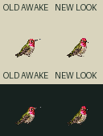
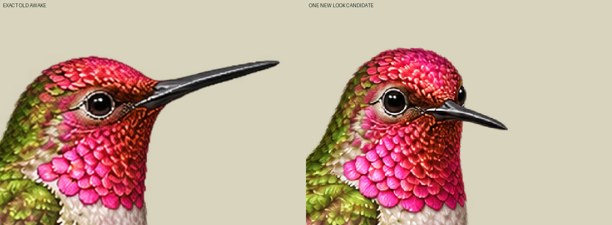
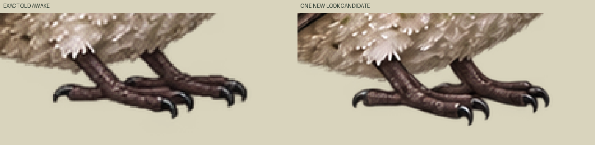

One new native drawing, exact current awake reused. Rose crown/gorget and green plumage remain visible. No new neutral, blink, flight or seasonal canon. Initial held/unbound candidate; foot/claw redraw requires independent normal-size review.
Normal tile64CSS/world,96-square output,density1.5,pivot55,75. Existing bird32.667world wide; new shorter projected bill envelope26.667world. Full native1254→96 nearest only. No body fit, painting, translation, foot snap or flight-body transform. Exact awake local pixels unchanged; own atlas retile moves its source rectangle from x96 to x0 only. Old foot markers53,74 and59,73 have alpha241/245; new same pixels252/248. These opacity measurements do not certify toe correspondence. New contacts[] remains deliberately unbound.
Authored one-shot30Hz: awake30ticks→look12ticks→exact awake30ticks. Two distinct poses; no generated intermediates, smooth head-turn or biological timing claim. Requested25–35° head direction is art direction, not a measured angle. Own idle uses only exact current awake. Existing standing awake/blink intake remains untouched.



Loading exact source atlas…
Source proposal, unreviewed, activation none, packetBindingReady false, appBound false. Canonical Zod/Sharp NOT_RUN; current Mac named-look UNKNOWN. No physical ground/perch support or runtime-ready claim.